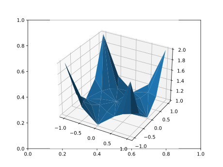
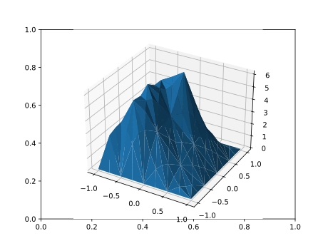

Modeling with JuMP
MultiGridBarrierJuMP lets you state convex variational problems in JuMP syntax and solve them with the MultiGridBarrier multigrid interior-point method. It is a JuMP.AbstractModel extension: the standard macros (@variable, @constraint, @objective) and accessors (value, objective_value, termination_status) work unchanged, but no MOI model is ever built — optimize! lowers the model directly to the classical pipeline amg → assemble → mgb_solve. The AMG hierarchy is constructed automatically from the geometry and the Dirichlet constraints; it is never user-visible.
The front end is a package extension (MultiGridBarrierJuMPExt) that loads automatically once both MultiGridBarrier and JuMP are imported. JuMP is not a dependency of MultiGridBarrier, so add it to your environment first (pkg> add JuMP). The modeling API (MGBModel, Coef, EpiPower, deriv, integral, set_start, On, Broken, Continuous, Uniform, mgb_solution, solver_log) is then exported from MultiGridBarrier.
Setup
using MultiGridBarrier, JuMP, PyPlotQuick tour: the p-Laplacian
\[\min \int \tfrac{1}{2} u + s \, dx \quad \text{s.t.} \quad s \geq \|\nabla u\|^{1.5}, \qquad u = x_1^2 + x_2^2 \text{ on } \partial\Omega .\]
A model is built over a fixed discretization, so every piece of spatial data (Coef) is resolved to per-node values at modeling time (see the data model below). Derivatives are written deriv(u, :dx) where the symbol is a key of geom.operators; the epigraph cone [q...; slack] in EpiPower(p) means slack ≥ ‖q‖₂ᵖ pointwise (slack last).
geom = subdivide(fem2d_P2(), 2)
m = MGBModel(geom)
set_attribute(m, "verbose", false)
@variable(m, u) # conforming (inferred)
@variable(m, s, Broken()) # broken slack: one dof per node
set_start(u, x -> x[1]^2 + x[2]^2) # initial iterate & Dirichlet lift
set_start(s, 100.0)
@constraint(m, u == Coef(m, x -> x[1]^2 + x[2]^2), On(find_boundary(geom)))
@constraint(m, [deriv(u, :dx); deriv(u, :dy); s] in EpiPower(1.5))
@objective(m, Min, integral(Coef(m, 0.5) * u + s))
optimize!(m)
termination_status(m)LOCALLY_SOLVED::TerminationStatusCode = 4
This is exactly the package's default problem, so we can compare against the classical API on the same geometry. The lowering produces the identical discrete problem, so the solutions agree bit-for-bit:
sol_ref = mgb_solve(assemble(amg(geom); p = 1.5); verbose = false)
maximum(abs.(value(u) .- sol_ref.z[:, 1]))0.0The data model: nodal vectors, with sugar
Because the discretization is fixed when the model is built, every piece of spatial data — coefficients, Dirichlet values, starts, obstacle heights, variable exponents — boils down to a vector with one value per broken node. That vector is the fundamental form, and every data entry point accepts it directly:
Coef(m, vals::AbstractVector)set_start(u, vals::AbstractVector)EpiPower(pvals::AbstractVector)On(geom, mask::AbstractVector{Bool})— region membership, one Bool per node
Node i is vertex v of element e with i = v + (e-1)V where V = size(geom.x, 1): the rows of reshape(geom.x, :, d) are the node coordinates in this ordering, value returns solutions in it, and an On pair (v, e) selects entry v + (e-1)V. Functions and constants are syntactic sugar, resolved eagerly at modeling time: Coef(m, f) equals Coef(m, [f(x) at every node coordinate x]), and Coef(m, 0.5) equals Coef(m, fill(0.5, n)).
xf = reshape(geom.x, :, 2) # broken-node coordinates
n = size(xf, 1)
gv = [xf[i, 1]^2 + xf[i, 2]^2 for i in 1:n] # nodal data, directly
value(Coef(m, gv)) == value(Coef(m, x -> x[1]^2 + x[2]^2))trueSince data goes in and solutions come out in the same nodal ordering, vectors round-trip: set_start(u, value(u)) warm-starts a model from a previous solve, and measured or precomputed nodal data (an image for ROF denoising, say) drops in directly, without wrapping it in an interpolating closure.
Regions: constraints on part of the domain
A constraint holds everywhere by default; adding On(...) restricts it to a node set of (vertex, element) pairs — the format of find_boundary and the low-level dirichlet_nodes API. On(geom, mask) is grid-level sugar for the same thing: a Bool mask over the nodal vectors (one entry per broken node, in the ordering of the data model), converted eagerly to the pair set. Equality + On is a Dirichlet condition; inequality/cone + On becomes a piecewise barrier, active only on the region. Region selection is ordinary data preparation — a comparison on the node coordinates gives the mask.
Here is a membrane pushed upward by a uniform load, with an obstacle imposed only on the left half of the domain:
geom2 = subdivide(fem2d_P2(), 3)
left = reshape(geom2.x, :, 2)[:, 1] .< 0 # Bool mask: nodes with x₁ < 0
m2 = MGBModel(geom2)
set_attribute(m2, "verbose", false)
@variable(m2, u2); @variable(m2, s2, Broken())
set_start(s2, 100.0)
@constraint(m2, u2 == Coef(m2, 0.0), On(find_boundary(geom2)))
@constraint(m2, [deriv(u2, :dx); deriv(u2, :dy); s2] in EpiPower(2.0))
@constraint(m2, u2 >= Coef(m2, x -> 0.25 - x[1]^2 - x[2]^2), On(geom2, left))
@objective(m2, Min, integral(Coef(m2, -1.0) * u2 + s2))
optimize!(m2)
The obstacle binds on its region (the infeasible start is handled by the feasibility phase automatically) and is genuinely absent elsewhere — the mask indexes solution vectors directly:
phi = value(Coef(m2, x -> 0.25 - x[1]^2 - x[2]^2))
println("min(u - φ) on the obstacle region: ", minimum(value(u2)[left] .- phi[left]))
println("min(u - φ) off the region: ", minimum(value(u2)[.!left] .- phi[.!left]))min(u - φ) on the obstacle region: 1.0837336583691126e-10
min(u - φ) off the region: -0.05647391523889361The Zoo, restated in JuMP
Every Zoo problem is a few lines in this syntax; jump/test_zoo.jl checks all six against the classical constructors. Two examples. The minimal surface uses a constant row inside the cone — s ≥ ‖(∇u, 1)‖ is the shifted Lorentz cone:
gu = x -> 0.5 * (x[1]^2 - x[2]^2)
ms = MGBModel(geom)
set_attribute(ms, "verbose", false)
@variable(ms, v); @variable(ms, sv, Broken())
set_start(v, gu); set_start(sv, 10.0)
@constraint(ms, v == Coef(ms, gu), On(find_boundary(geom)))
@constraint(ms, [deriv(v, :dx); deriv(v, :dy); Coef(ms, 1.0); sv] in EpiPower(1.0))
@objective(ms, Min, integral(1.0 * sv))
optimize!(ms)
ref = mgb_solve(Zoo.minimal_surface(amg(geom)); verbose = false)
maximum(abs.(value(v) .- ref.z[:, 1]))0.0Rudin–Osher–Fatemi denoising uses spatial data inside a cone — the fidelity slack is r ≥ (u - f_data)²:
fdata = x -> 0.5 * tanh(5 * x[1])
mr = MGBModel(geom)
set_attribute(mr, "verbose", false)
@variable(mr, w); @variable(mr, sw, Broken()); @variable(mr, r, Broken())
set_start(w, fdata); set_start(sw, 10.0); set_start(r, 10.0)
fd = Coef(mr, fdata)
@constraint(mr, w == fd, On(find_boundary(geom)))
@constraint(mr, [deriv(w, :dx); deriv(w, :dy); sw] in EpiPower(1.0)) # s ≥ |∇u|
@constraint(mr, [w - fd; r] in EpiPower(2.0)) # r ≥ (u-f)²
@objective(mr, Min, integral(sw + Coef(mr, 0.5) * r))
optimize!(mr)
ref = mgb_solve(Zoo.rof(amg(geom)); verbose = false)
maximum(abs.(value(w) .- ref.z[:, 1]))0.0What lowers to what
| model content | classical object |
|---|---|
geometry passed to MGBModel | Geometry |
| variables, kinds, Dirichlet constraints | state_variables + dirichlet_nodes → amg(geom; dirichlet_nodes) |
distinct atoms (component, operator) used anywhere | the D table |
| each cone constraint | one Convex piece (convex_linear / convex_Euclidian_power); same-region scalar inequalities are merged into a single stacked piece |
On regions on cones | convex_piecewise selector columns |
integral(...) objective | the cost grid f_grid |
| starts + Dirichlet data | the initial/lift grid g_grid |
Untagged variables are conforming if differentiated or Dirichlet-constrained and broken otherwise; Broken() / Continuous() / Uniform() override. The notion of continuity is the geometry's connectivity geom.t, so slit domains built with explicit connectivity keep their slits. The model must be in conic form (epigraph slacks are yours to declare, as with any conic solver); pointwise equality requires On; variable bounds and products of variable expressions are rejected with explanatory errors. Spectral geometries work too, with one restriction inherited from their hierarchy: the spectral Dirichlet subspace is built by basis truncation, so a Dirichlet condition there must cover exactly the whole boundary (find_boundary(geom)). dual is not wired up yet.
API reference
MultiGridBarrier.MGBModel — Function
MGBModel(geom::Geometry)Construct a JuMP model over a fixed MultiGridBarrier discretization. Requires using JuMP (which loads the modeling extension). Build it from any FEM or spectral Geometry (e.g. fem2d_P2(), subdivide(fem2d_P1(), 4), spectral2d(n = 16); spectral Dirichlet conditions must cover the whole boundary), then use the standard JuMP macros (@variable, @constraint, @objective); optimize! lowers the model to amg → assemble → mgb_solve, constructing the AMG hierarchy automatically from the geometry and the Dirichlet constraints. All spatial data (Coef) is per-broken-node vectors, resolved eagerly at modeling time (functions and constants are sugar for their nodal samples).
Solver options via set_attribute(m, key, value) with string keys "prolongator", "tol", "t", "t_feasibility", "maxit", "kappa", "max_newton", "verbose", "device".
MultiGridBarrier.Coef — Function
Coef(m, v::AbstractVector{<:Real})
Coef(m, f::Function)
Coef(m, r::Real)Spatial data for a MGBModel: one value per broken node. The nodal vector v is the fundamental form; it must have length V*N (V vertices per element, N elements), where entry i = v + (e-1)V belongs to vertex v of element e — the ordering of the rows of reshape(geom.x, :, d), of the vectors returned by value, and of the (v, e) pairs used by On. The other two forms are syntactic sugar, resolved eagerly on construction: Coef(m, f) is Coef(m, [f(x_i) for every node]), where f receives a node coordinate as a Vector and returns a Real, and Coef(m, r) is the constant vector Coef(m, fill(r, V*N)).
MultiGridBarrier.deriv — Function
deriv(u, op::Symbol)The atom op applied to a model variable u, e.g. deriv(u, :dx). op must be a key of the geometry's operators (:id, :dx, :dy, ...). deriv(u, :id) is u.
MultiGridBarrier.integral — Function
integral(expr)The objective functional ∫ expr dx, where expr is affine in the model atoms; use inside @objective(m, Min, integral(...)).
MultiGridBarrier.EpiPower — Function
EpiPower(p)The pointwise epigraph set { [q; s] : s ≥ ‖q‖₂^p }, used as @constraint(m, [q...; s] in EpiPower(p)) — slack LAST (the convex_Euclidian_power [q; s] convention). The exponent p ≥ 1 is spatial data in the same three forms as Coef: a per-node vector (the fundamental form), a spatial function x -> p(x), or a constant Real.
MultiGridBarrier.On — Type
On(pairs::Vector{Tuple{Int,Int}})
On(geom::Geometry, mask::AbstractVector{Bool})Constraint region for a MGBModel: a set of broken nodes as (vertex, element) pairs — the same format as find_boundary and the low-level dirichlet_nodes API. The second form is grid-level sugar: a Bool mask over the nodal vectors of Coef, converted eagerly to the pair set (mask[v + (e-1)V] selects vertex v of element e; the geometry supplies V). A mask composes directly with grid-level data: On(geom, reshape(geom.x, :, d)[:, 1] .< 0) is the left half of the domain. @constraint(m, u == g, On(pairs)) is a Dirichlet condition; an inequality/cone with On holds only on those nodes.
MultiGridBarrier.Broken — Type
Broken()@variable tag for a MGBModel: the variable lives in the broken space (one degree of freedom per broken node) — the natural space for epigraph slacks. Untagged variables are broken by default when never differentiated or Dirichlet-constrained. See also Continuous.
MultiGridBarrier.Continuous — Type
Continuous()@variable tag for a MGBModel: the variable is a conforming (continuous) finite-element function, glued across elements. This is what untagged variables become when they are differentiated or Dirichlet-constrained; use the tag to force it for a variable that is neither — e.g. a slack you want continuous. (Note that constraining a slack to be continuous genuinely changes the optimum relative to Broken: the pointwise epigraph reformulation is exact only for broken slacks.)
The notion of continuity is the geometry's, not the tag's: DOFs are glued according to the connectivity geom.t. A slit/branch-cut domain built with an explicit connectivity (tensor_dofmap, the t= keyword of the mesh constructors, or gmsh_import's exact node tags) keeps coincident-but-distinct nodes separate, and Continuous() respects that gluing automatically — "continuous" then means continuous everywhere except across the slit.
MultiGridBarrier.Uniform — Type
Uniform()@variable tag for a MGBModel: the variable is a single global constant.
MultiGridBarrier.set_start — Function
set_start(u, v::AbstractVector{<:Real})
set_start(u, f::Function)
set_start(u, r::Real)Initial iterate for component u of a MGBModel, as per-node data in the same three forms as Coef: a nodal vector (the fundamental form), or a spatial function / constant as sugar for it. value(u) returns solutions in the same nodal ordering, so set_start(u, value(u)) warm-starts from a previous solve. For Dirichlet-constrained variables the start doubles as the lift away from the constrained nodes; give slacks a comfortably feasible (large) start.
MultiGridBarrier.mgb_solution — Function
mgb_solution(m::MGBModel) -> MGBSOLThe underlying MultiGridBarrier solution object after optimize! (for plot(sol), logs, etc.).
MultiGridBarrier.solver_log — Function
solver_log(m::MGBModel) -> StringThe MGB solver iteration log after optimize!.